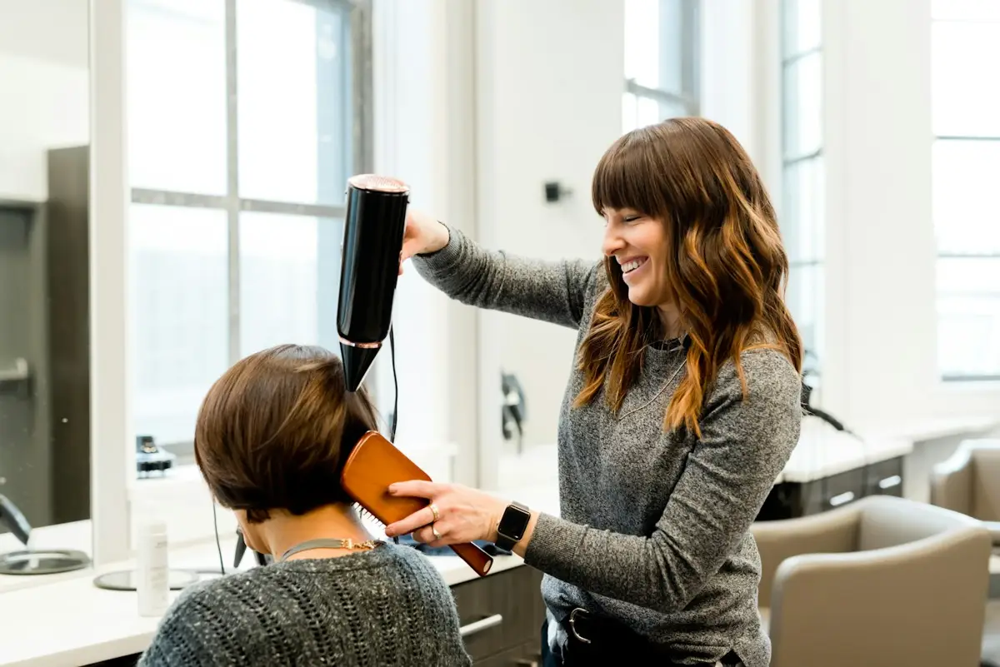

Hair
Signature cut
A consultation, tailored cut and a clean finish.
45 min · S$38
Straightforward grooming with attention to proportion, texture and the finishing details.
The chair is yoursChoose what fits, then add your details. We confirm scope and availability with you.
A consultation, tailored cut and a clean finish.
45 min · S$38A balanced shape, from the top down.
60 min · S$52Clean edges and a shape that suits your face.
25 min · S$25Fictional demo: images are illustrative stock references. Any prices, schedules and listings shown are examples, not live offers.

Tell us what you liked about your last cut and how much styling you want to do each morning.
A reference photo is useful, along with a quick description of your styling routine.
Tell us what you liked about your last cut and how much styling you want to do each morning.
This is a fictional design demo. The form previews the enquiry flow and does not send or store your details. Use the link to Ruhaan to discuss making this design your own.
Tell us what you liked about your last cut and how much styling you want to do each morning.
Try this form with sample details. It previews an enquiry only—nothing is sent, stored or booked.
Ask Ruhaan for this website ↗